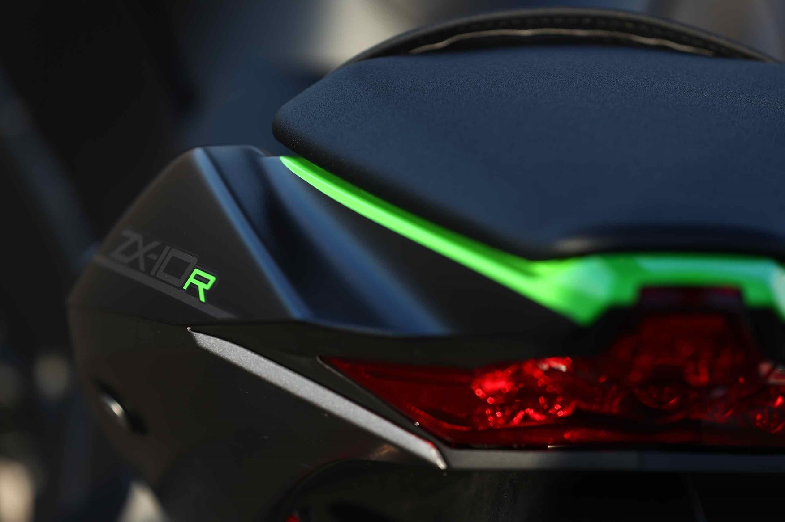

Kawasaki may be late to the electronic semi-active suspension superbike party, but they reckon they’ve got a few tricks up their sleeve that could make it the best of the breed. The new £18,949 ZX-10R SE features Kawasaki’s (and Showa’s) first self-adjusting forks and shock. As well as suspension that’s designed to always give you the perfect amount of support and bump-absorption, the range-topping machine also gets the lightweight Marchesini wheels and autoblipper from the homologation special ZX-10RR.

Normal, mechanically adjustable suspension is a compromise. You’re stuck with a single suspension setting and that’s the one either you, or someone who knows what they’re doing, have lovingly dialled in (quite rare), or the one given to you out of the box (more likely). The latter will be the mother of all ‘one-size-fits-all’ settings that may never suit your size, or the way you ride. In theory there are no such problems with semi-active suspension. Producing the hardware is relatively simple (just fit a means to automatically turn the adjusters inside the forks and shock), but the difficult bit is telling the suspension what to do in the first place.
The Japanese firm claims its Kawasaki Electronic Control Suspension (KECS) is a cut above the rest because of the speed their damping adjustment reacts, the amount of information it gathers to do it and the quality of the Showa suspension units themselves. Unlike rival systems that use either step motors or indirect control solenoids to twiddle the damping adjusters, the Kawasaki uses a direct control solenoid, which can react at lightning speed (1000 times a second). KECS also harvests data from the bike at a similarly mind-boggling rate of knots and uses that information to constantly fine-tune damping.
It’s common for modern semi-active suspension to take readings from the ECU and Inertial Measurement Units to get everything from road and wheel speeds, lean angle, throttle position and brake pressure. The BMW also has a shock travel sensor, which lets the system know how much and fast its moving and whether its on its up (rebound) or down (compression) stroke. The ZX-10R SE’s system ticks all these boxes and goes a stage further with a stroke sensor in the left fork leg, for even more control and that’s a road bike first (you’ve probably seen them on the outside of one of the fork legs on racing bikes). There are two main suspension modes to choose from on the move: Road, which works in a soft range and Track, which has a firmer set-up. There’s also a third, Manual mode (which is still semi-active), which lets you fine-tune things further. The KECS is fast, clever and the high-spec Showa gas suspension is the same as you’ll find holding up the standard ZX-10R. There’s no drop in quality to make up for its silicone enhancements, which goes some way to explain the SE’s fruity price tag. The new suspension is at its most impressive on the road. One of the ZX-10R’s most impressive traits is the plushness of its Showa forks and shock. That velvety ride quality is still there in Road mode, but it’s slightly tougher, as the magic damping control does its thing to support you under braking and acceleration. It all adds up to a ZX-10R with a crisper feel. It’s lighter, more talkative in your hands and rock-solid stable at any speed. You can feel just how much damping range there is (a true sign of top drawer suspension) by experimenting with ‘Track’ mode on the road. The extra damping support it gives actually helps the Kawasaki steer and change direction even easier. It’s more fun, but unsurprisingly it doesn’t handle road bumps as well. A setting between Track and Road (easily done in Manual mode) would be perfect, but when you don’t feel like doing your Johnny Rea impression on your favourite stretch, the beauty of the KECS is you can click it into its soft setting and enjoy a comfortable ride. You could even go a step further in Manual mode and set the SE really soft for motorway cruising and for riding in the wet.
With stronger damping control, the SE stays firmer at the back, holding itself up under hard acceleration and slowing the rate of dive when hard on the brakes. But at full lean the suspension softens to help tyres meld into the tarmac. It’s lighter steering through chicanes and more stable under hard braking and acceleration. This electronic set-up short-cuts hours and possibly even days-worth of trying to dial in the perfect set-up yourself, but as impressive as the KECS is, the forks have a slightly dead feeling as you trail brake into an apex and the steering still isn’t as sharp as some if its superbike rivals. It’s worth noting fork and shock preload (which is still a pig to get to) isn’t electronically adjustable, so for circuit work you’ll still have to dig out your screwdriver and C-spanner to set suspension sag. Suspension adjustment aside the SE has the same feel as the RR. It’s a peaky devil, so you have to ride it like a 600 to stop it bogging out of corners, but when you wind it up it howls like a maniac between corners. Lighter wheels are an undoubted plus, but you’d can’t feel their benefit riding the SE in isolation, but the IMU-fuelled traction control, anti-wheelie, quickshifter and autoblipper are up there with the best in business. Kawasaki disconnected the conservatively-set ABS for us on the track and while the M50 Brembos monobloc calipers don’t lack power, they lack the joyful feeling and bite of the best set-ups out there.
Serious circuit heads will still be better off with well-set aftermarket suspension and bespoke springs, but the SE is perfect for occasional trackday riders. Just flick a button to have fun all day and ride home without rattling out your fillings. The three suspension settings aren’t linked into the Kawasaki’s riding modes, like some, so you need to go into the and slightly clumsily) menu to choose, via the ZX-10R SE’s LCD dash.
ZX-10R, £14,149, 197bhp, 206kg
Base model, launched in 2016 with Euro 4 motor, lighter engine internals, Showa gas forks, chassis and styling mods, Brembo monoblocs, quickshifter, rider modes, traction and wheelie control.
ZX-10RR, £16,249, 197bhp, 206kg
The homologation special RR is the one you want for racing. It’s no more powerful than the R, but has stronger crankcases, DLC-coated tappets, a larger cylinder head to accept high-lift cams, lightweight wheels and a blipper.
ZX-10R SE, £18,949, 197bhp, 206kg
New for 2018 the SE has the engine, chassis and electronics of the ZX-10R, the autoblipper and lightweight wheels of the RR with new electronic semi-active Showa suspension.
Price £18,949
Engine 998cc 16v inline four
Frame Cast aluminium twin spar
Seat height 835mm
Suspension 43mm Showa forks and single rear shock. Electronic semi-active damping and mechanically adjustable preload.
Front brake 2 x 330mm front discs with four-piston Brembo radial calipers. 220mm rear disc with single-piston caliper. ABS
Colours Black
Available Now
Power 197bhp@13,000rpm
Torque 84ftlb@11,500rpm
Kerb weight 206kg
Tank capacity 17-litres
Kawasaki unvieled its new machine at the EICMA show back in November.